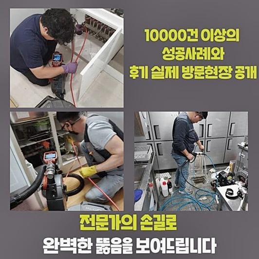
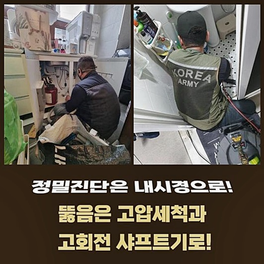
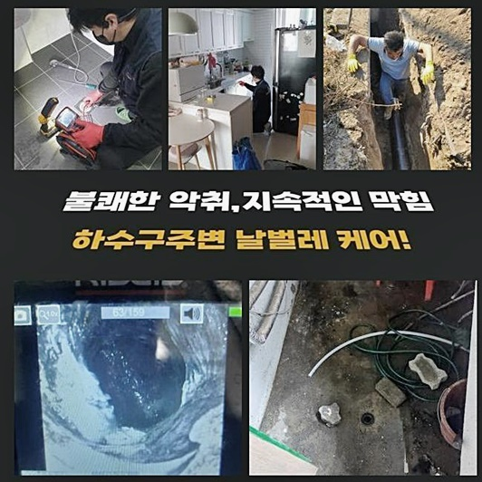
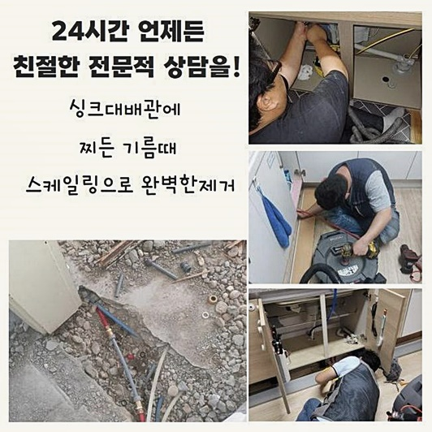
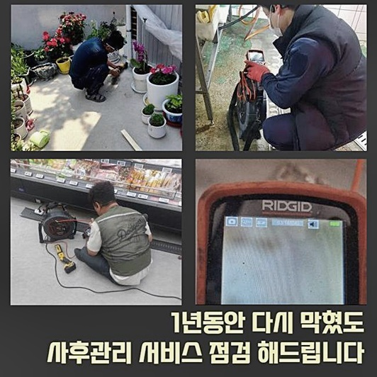
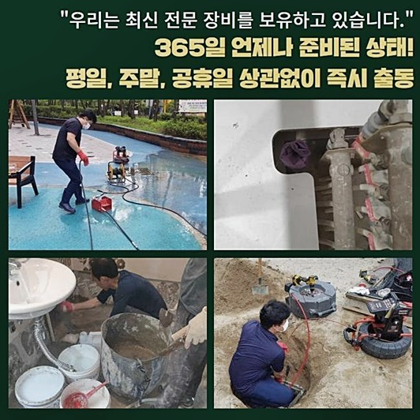
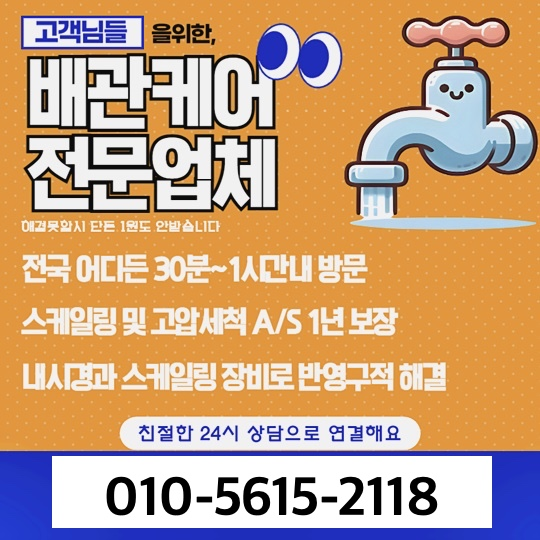

🏠 안성 대천동하수구역류 일죽면 맨홀역류 배관공사
용인시 처인구 배관막힘 전문 시공 후기

📋 작업 개요
- 위치: 용인시 처인구, 수원시 영통구, 화성시 동탄
- 서비스 유형: 배관막힘, 고압세척, 내시경점검
- 작업 일시:
- 업체명: 하수구수사대 (010-5615-2118)
🔍 문제 상황
안성 대천동하수구역류 일죽면 맨홀역류 배관공사
건축물은 축조 시 각 라인들을 더불어 설치하기에 우리의 일상을 편하게 해주죠
반대로 기간이 흐르며 배수관은 노후되는 탓에 많은 피해를 일으키게 만들죠
오래전에 세워진 건물내부에서 막혀버리는 증세가 생긴걸 확인했죠
이제부터 막히게되는 사태가 어느정도로 악영향을 끼치는지 설명하는 시간들을 가져볼게요
증상을 잠재우기위해서는 전문진의 경험들이 필요한 까닭에 조속히 전문가에게 문제들을 바로잡기위해 도움들을 청하는게 올바른 방법이에요
내구성이 떨어진다면 심층부까지 잔해가 축적되어 배수자체를 막아섭니다
마찬가지로 하수관로에서 하수가 흐르며 기름때같은거나 머리카락덩어리와 같은 이물들이 순차적으로 배관 내부로 빠지게되죠
이물들은 하수도 안에서 굳게되어 뭉치를 형성해내면서 통수를 방해하게 되요
때문에 배관들의 내구성 저하를 늦추려면 정기적으로 점검들이 수행되어야합니다 마찬가지로 잔해물이 누적되는 일이 없게 주의해주셔야 합니다
비용과 시간을 투입해 배수로를 안정적으로 관리하는게 생활측면의 편리를 증가하고자 함에 필요한 절차로 자리잡고 있습니다
반대로 잔해가 축적된것을 그저 손놓고 있는다면 또다른 문제가 파생될 여지가 충분해 이물을 없애주고 꼼꼼히 정비를 실시하는게 중요하겠습니다

🔎 원인 분석
💡 전문가 진단: 정밀 진단 장비를 사용하여 슬러지의 고착 여부를 판명하고 타격/세척 작업을 실시했습니다.
석션제품을 써서 이물질들을 청소한 다음 나머지 과정들을 수행해내는게 해결해주는데에 결정적인 역할을 합니다
이렇듯 주기적인 청소와 관리들을 통하여 배관장애를 예방하는데 도움이 됩니다
이물이 쌓이게된 하수도와 잔해물들의 흐름을 살핀 뒤 증상의 원초적인 원인들을 파악해봐야 해요
때문에 적재적소 작업계획을 세워 진행한다면 제대로된 세척결과들을 얻게될거에요
흔히 보이는 뚫어뻥의 제품을 쓰는건 잠깐동안의 증상을 완화시켜주지만 근본적인 방안이 되는 일은 드뭅니다
전문진의 도움으로 안전하고 완성도 높은 처리를 행하면 하수구막힘 증상을 빈틈없이 시정해냅니다
기술들과 관련지식을 초고하여 세척작업들을 해준다면 최고의 결과물을 얻게되실거에요
필요하다면 전문인들의 방법으로 위험부담없는 세척을 이어나가는게 중요하겠습니다
때문에 이상징후가 벌어졌을 때 즉시 전문진을 이어간다면 의뢰해서 해결하는데에 집중해야하죠
배수구로 배수되는 속력이 떨어졌다거나 역류문제가 발생되는등 2차적인 피해가 발생될때 더욱 중요하죠
조치들이 행해지지않을 시 중심부역할을 하는 배수관에서 손상들이 생길 수 있으며 2차적인 문제들로 발전될지 몰라요
전형적으로 잔해물이 누적되어있는 배관은 석션장비 내시경기기 샤프트들을 이용해요

🔧 작업 과정
잔해물을 세척해주고자 점검한 뒤 샤프트를 이용하거나 고압 세척을 행하면 청결하게 하수로를 수리해요
세척을 해줄때 이물질들을 천천히 청소하고 적합한 장비를 사용해 하수도를 구석구석 수리해요
무분별한 작업 개시는 문제들을 안좋게 만들기에 충분해요 내시경의 경우 심층부에 있어서 체크하는게 만만치않은 지점들도 파악하도록 도와주어 필수적인 기능을합니다
잔해의 위치들을 살펴서 해결방법을 이행하고있어요
워터젯 고압세척을 이어간다면 이물질을 말끔하게 청소하고 있는데요
전문인의 대응책을 따라 안전하게 세척을 수행하는것이 중요하죠
다각적인 접근 방식을 이어간다면 하수구막힘 증상을 말끔하게 해결합니다
자가적으로 해결하기보단 전문업체의 조언으로 대응책들을 마련해주는게 합리적이겠습니다
이물질이 많이 쌓이게되면 배수 속력이 하락하고 물들이 역으로 치솟는 증세가 야기될 확률이 있으므로 중앙시설로 흘러가는 속도들이 둔화되는 현상이 눈앞에 놓입니다
이러한 과정속에서 배수관에선 팽창들이 반복되며 균열들이 나타나기에 피해규모가 커진 복합적인 증상들을 배제할 수가 없어요
때문에 작업시간을 열어두는것이 중요하겠습니다
달려갔었던 곳의 경우 화장실내부서 냄새들이 심했고 배관 컨디션이 악상황으로 치닫았죠
물을 배출시켜 역류해버리는 상황을 살피게되었어요
하수가 안내려간다거나 간헐적으로라도 거꾸로 솟진않는건지 세심히 체크했습니다
이토록 함으로써 전문진들은 문제 까닭들을 앎으로서 마무리까지 문제요소를 최소화합니다
이물들을 제거하고서 외부와 연결되어있는 지점을 깨끗히 분리해서 문제의 배관을 체크했습니다
내시경장비로 깊은 곳까지 증상이 시작되는 지점을 확인해주고 어떤 이유로 인해 안빠지는지 원인들을 찾아내기 위해 한시도 눈을 떼지 않았는데요
고객님에게 배관 상태를 보여드린 뒤 설명하며 고쳐낸 현상들을 확인시켜드렸는데요
무엇때문에 배관 장애가 야기되었는가 찾아내어 이유들을 제거시키고, 무결점의 해결들을 실시하는것에 노력을 기울였는데요


✅ 작업 완료
그렇기에 고객분의 피해들을 잠재우고 최고의 이점들을 실현하게끔 최선의 방식만을 추구합니다
저희업체가 고객의 가정에 내방하기에 앞서서 다른데서 다녀갔으나 문제들이 시정이안되어 결국 저희를 불러주셨어요
의뢰인은 저희가 중요하게 여기는 시스템들에 대하여 칭찬을 해주셨고 문제가 해결되지 않았다면 금액을 안받고있고 as들을 실시하는 것이 끌렸다고 하셔쓴데요
알맞은 장비들을 갖춰서 불편을 줄여나가 고객의 만족도를 보장하도록 오늘도 달립니다
필요하실때 저희업체에게 전화주신다면 재빠르게 방문드리겠습니다




⚠️ 하수구 배관 막힘 예방 및 관리 가이드
- ✅ 머리카락, 비닐, 물티슈 등 물에 분해되지 않는 이물질은 절대 흘려보내지 마세요.
- ✅ 기름기 많은 식기는 설거지 전 키친타올로 먼저 기름때를 닦아내세요.
- ✅ 주기적으로 배수구에 뜨거운 물을 가득 부어주어 유지방 고착을 방지하세요.
- ✅ 작업 후 1년 이내 재발 시 무상 A/S 보증 서비스를 제공합니다.
💡 핵심 정리
- 확실한 장비 작업(내시경 점검 및 샤프트 스케일링)으로 원인을 뿌리 뽑습니다.
- 작업 후 1년 이내에 동일한 부위 재발 시 100% 무상 A/S 서비스를 보장합니다.
- 서울 · 경기 · 인천 전 지역에 24시간 언제든 긴급 출동할 수 있도록 항시 대기 중입니다.
❓ 자주 묻는 질문 (FAQ)
🚨 용인시 처인구 배관막힘 문제로 고민이신가요?
정확한 원인 진단과 확실한 시공으로 재발 없는 해결을 약속드립니다.
24시간 긴급 출동 | 서울 · 경기 · 인천 전지역 | 1년 내 재발 시 무상 A/S